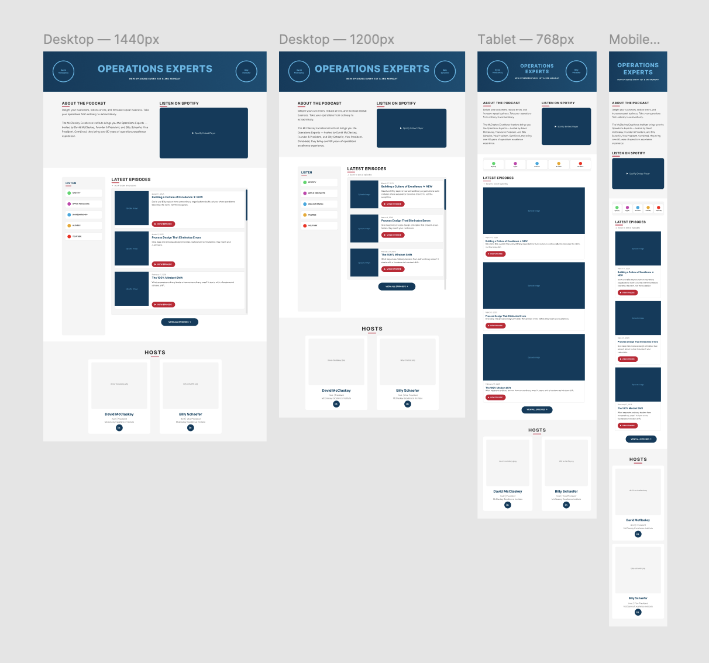
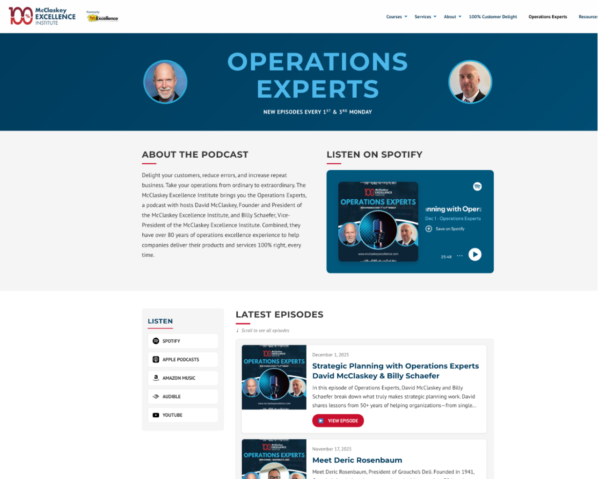

The Operations Experts Website Page Project was coded using HTML, CSS, and Javascript to get the basic design. This included embedding a player using the RSS feed to play the most recent episode as well as displaying the most recent episode list. Then, after customer approval, was uploaded to Claude with a custom prompt to generate a Figma design for all 4 breakpoints to match the current website's breakpoints. After the customer approved the design for all 4 breakpoints, using a custom prompt for Claude Code to write the PHP, integrate the page's CSS into the website's CSS, as well as for the Javascript. Everything was integrated into the customer's existing custom WordPress theme.

